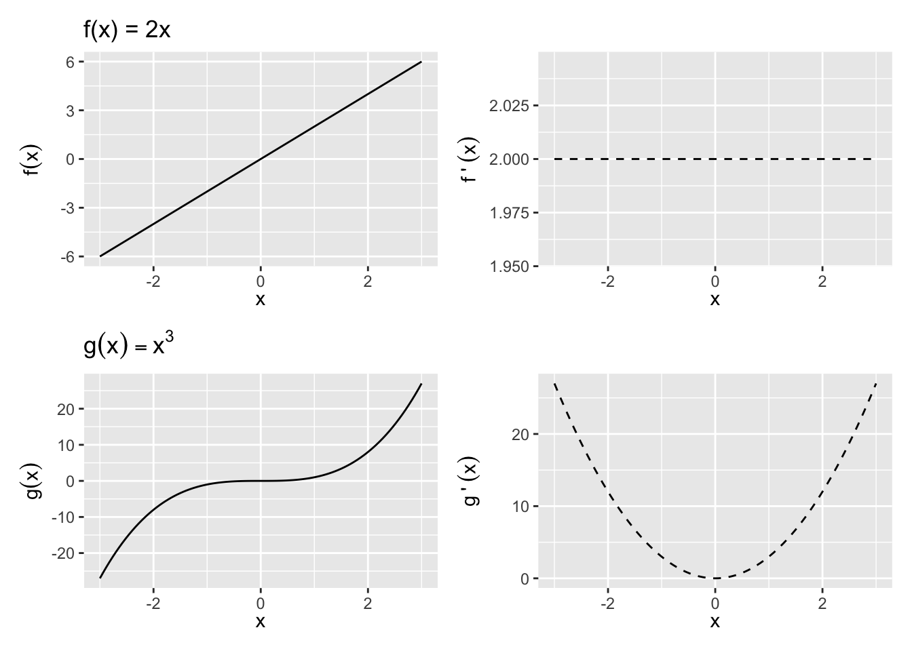
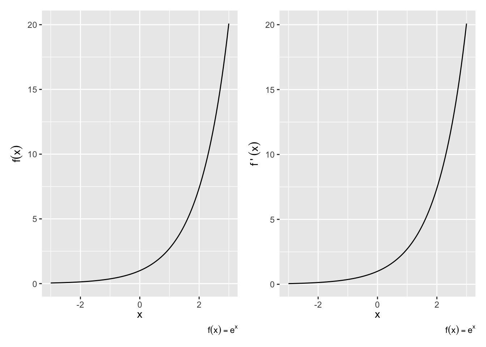
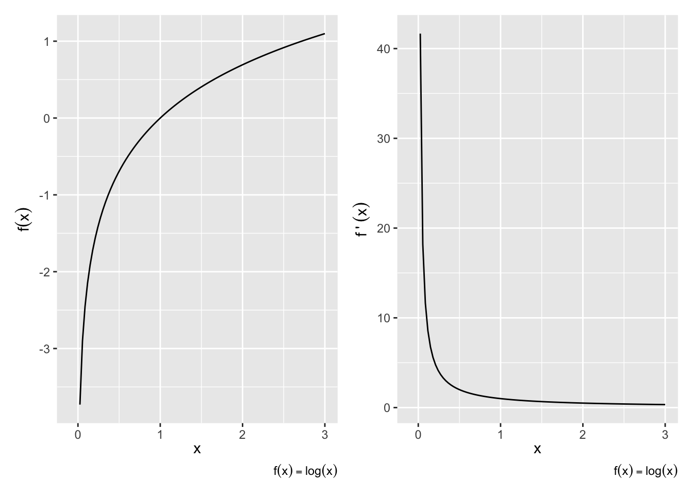

10 Differential Calculus
Calculus is a fundamental part of any type of statistics exercise. Although you may not be taking derivatives and integral in your daily work as an analyst, calculus undergirds many concepts we use: maximization, expectation, and cumulative probability.
10.1 Derivatives
The derivative of f at x is its rate of change at x: how much f(x) changes with a change in x. The rate of change is a fraction — rise over run — but because not all lines are straight and the rise over run formula will give us different values depending on the range we examine, we need to take a limit.
Definition 10.1 (Derivative) Let f be a function whose domain includes an open interval containing the point x. The derivative of f at x is given by
\frac{d}{dx}f(x) =\lim\limits_{h\to 0} \frac{f(x+h)-f(x)}{(x+h)-x} = \lim\limits_{h\to 0} \frac{f(x+h)-f(x)}{h}
There are a two main ways to denote a derivate:
- Leibniz Notation: \frac{d}{dx}(f(x))
- Prime or Lagrange Notation: f'(x)
If f(x) is a straight line, the derivative is the slope. For a curve, the slope changes by the values of x, so the derivative is the slope of the line tangent to the curve at x. See, For example, Figure 10.1.
If f'(x) exists at a point x_0, then f is said to be differentiable at x_0. That also implies that f(x) is continuous at x_0.
Properties of derivatives
Suppose that f and g are differentiable at x and that \alpha is a constant. Then the functions f\pm g, \alpha f, f g, and f/g (provided g(x)\ne 0) are also differentiable at x. Additionally,
Constant rule: \left[k f(x)\right]' = k f'(x)
Sum rule: \left[f(x)\pm g(x)\right]' = f'(x)\pm g'(x)
With a bit more algebra, we can apply the definition of derivatives to get a formula for of the derivative of a product and a derivative of a quotient.
Product rule: \left[f(x)g(x)\right]^\prime = f^\prime(x)g(x)+f(x)g^\prime(x)
Quotient rule: \left[f(x)/g(x)\right]^\prime = \frac{f^\prime(x)g(x) - f(x)g^\prime(x)}{[g(x)]^2}, ~g(x)\neq 0
Finally, one way to think of the power of derivatives is that it takes a function a notch down in complexity. The power rule applies to any higher-order function:
Power rule: \left[x^k\right]^\prime = k x^{k-1}
For any real number k (that is, both whole numbers and fractions). The power rule is proved by induction, a neat method of proof used in many fundamental applications to prove that a general statement holds for every possible case, even if there are countably infinite cases. We’ll show a simple case where k is an integer here.
Proof. We would like to prove that
\left[x^k\right]^\prime = k x^{k-1}
for any integer k.
First, consider the first case (the base case) of k = 1. We can show by the definition of derivatives (setting f(x) = x^1 = 1) that
[x^1]^\prime = \lim_{h \rightarrow 0}\frac{(x + h) - x}{(x + h) - x}= 1.
Because 1 is also expressed as 1 x^{1- 1}, the statement we want to prove holds for the case k =1.
Now, that the statement holds for some integer m. That is, assume
\left[x^m\right]^\prime = m x^{m-1}
Then, for the case m + 1, using the product rule above, we can simplify
\begin{align*} \left[x^{m + 1}\right]^\prime &= [x^{m}\cdot x]^\prime\\ &= (x^m)^\prime\cdot x + (x^m)\cdot (x)^\prime\\ &= m x^{m - 1}\cdot x + x^m ~~\because \text{by previous assumption}\\ &= mx^m + x^m\\ &= (m + 1)x^m\\ &= (m + 1)x^{(m + 1) - 1} \end{align*}
Therefore, the rule holds for the case k = m + 1 once we have assumed it holds for k = m. Combined with the first case, this completes proof by induction – we have now proved that the statement holds for all integers k = 1, 2, 3, \cdots.
To show that it holds for real fractions as well, we can prove expressing that exponent by a fraction of two integers.
These “rules” become apparent by applying the definition of the derivative above to each of the things to be “derived”, but these come up so frequently that it is best to repeat until it is muscle memory.
Exercise 10.1 For each of the following functions, find the first-order derivative f^\prime(x).
- f(x)=c
- f(x)=x
- f(x)=x^2
- f(x)=x^3
- f(x)=\frac{1}{x^2}
- f(x)=(x^3)(2x^4)
- f(x) = x^4 - x^3 + x^2 - x + 1
- f(x) = (x^2 + 1)(x^3 - 1)
- f(x) = 3x^2 + 2x^{1/3}
- f(x)=\frac{x^2+1}{x^2-1}
10.2 Higher-Order Derivatives
The first derivative is applying the definition of derivatives on the function, and it can be expressed as
f'(x), ~~ y', ~~ \frac{d}{dx}f(x), ~~ \frac{dy}{dx}
We can keep applying the differentiation process to functions that are themselves derivatives. The derivative of f'(x) with respect to x, would then be f''(x)=\lim\limits_{h\to 0}\frac{f'(x+h)-f'(x)}{h} and we can therefore call it the Second derivative:
f''(x), ~~ y'', ~~ \frac{d^2}{dx^2}f(x), ~~ \frac{d^2y}{dx^2}
Similarly, the derivative of f''(x) would be called the third derivative and is denoted f'''(x). And by extension, the nth derivative is expressed as \frac{d^n}{dx^n}f(x), \frac{d^ny}{dx^n}.
Example 10.1 \begin{align*} f(x) &=x^3\\ f^{\prime}(x) &=3x^2\\ f^{\prime\prime}(x) &=6x \\ f^{\prime\prime\prime}(x) &=6\\ f^{\prime\prime\prime\prime}(x) &=0\\ \end{align*}
Earlier, in Section 10.1, we said that if a function differentiable at a given point, then it must be continuous. Further, if f'(x) is itself continuous, then f(x) is called continuously differentiable. All of this matters because many of our findings about optimization rely on differentiation, and so we want our function to be differentiable in as many layers. A function that is continuously differentiable infinitly is called “smooth”. Some examples: f(x) = x^2, f(x) = e^x.
10.3 The Chain Rule
As useful as the above rules are, many functions you’ll see won’t fit neatly in each case immediately. Instead, they will be functions of functions. For example, the difference between x^2 + 1^2 and (x^2 + 1)^2 may look trivial, but the sum rule can be easily applied to the former, while it’s actually not obvious what do with the latter.
Composite functions are formed by substituting one function into another and are denoted by (f\circ g)(x)=f[g(x)]. To form f[g(x)], the range of g must be contained (at least in part) within the domain of f. The domain of f\circ g consists of all the points in the domain of g for which g(x) is in the domain of f.
Example 10.2 Let f(x)=\ln x for 0<x<\infty and g(x)=x^2 for -\infty<x<\infty.
Then
(f\circ g)(x)=\ln x^2, -\infty<x<\infty - \{0\}
Also
(g\circ f)(x)=[\ln x]^2, 0<x<\infty
Notice that f\circ g and g\circ f are not the same functions.
With the notation of composite functions in place, now we can introduce a helpful additional rule that will deal with a derivative of composite functions as a chain of concentric derivatives.
Chain Rule:
Let y=(f\circ g)(x)= f[g(x)]. The derivative of y with respect to x is \frac{d}{dx} \{ f[g(x)] \} = f'[g(x)] g'(x)
We can read this as: “the derivative of the composite function y is the derivative of f evaluated at g(x), times the derivative of g.”
The chain rule can be thought of as the derivative of the “outside” times the derivative of the “inside”, remembering that the derivative of the outside function is evaluated at the value of the inside function.
- The chain rule can also be written as \frac{dy}{dx}=\frac{dy}{dg(x)} \frac{dg(x)}{dx} This expression does not imply that the dg(x)’s cancel out, as in fractions. They are part of the derivative notation and you can’t separate them out or cancel them.)
Example 10.3 Find f^\prime(x) for f(x) = (3x^2+5x-7)^6.
The direct use of a chain rule is when the exponent of is itself a function, so the power rule could not have applied generaly:
Generalized Power Rule:
If f(x)=[g(x)]^p for any rational number p, f^\prime(x) =p[g(x)]^{p-1}g^\prime(x)
10.4 Derivatives of logs and exponents
Natural logs and exponents (they are inverses of each other; see Prerequisites) crop up everywhere in statistics. Their derivative is a special case from the above, but quite elegant.
Theorem 10.1 The functions e^x and the natural logarithm \ln(x) are continuous and differentiable in their domains, and their first derivate is
(e^x)^\prime = e^x
\ln(x)^\prime = \frac{1}{x}
Also, when these are composite functions, it follows by the generalized power rule that
\left(e^{g(x)}\right)^\prime = e^{g(x)} \cdot g^\prime(x)
\left(\ln g(x)\right)^\prime = \frac{g^\prime(x)}{g(x)}, ~~\text{if}~~ g(x) > 0
We will relegate the proofs to small excerpts.
Derivatives of exponents
To repeat the main rule in Theorem 10.1, the intuition is that
- Derivative of e^x is itself: \frac{d}{dx}e^x = e^x (See Figure 10.2)
- Same thing if there were a constant in front: \frac{d}{dx}\alpha e^x = \alpha e^x
- Same thing no matter how many derivatives there are in front: \frac{d^n}{dx^n} \alpha e^x = \alpha e^x
- Chain Rule: When the exponent is a function of x, remember to take derivative of that function and add to product. \frac{d}{dx}e^{g(x)}= e^{g(x)} g^\prime(x)

Example 10.4 Find the derivative for the following.
- f(x)=e^{-3x}
- f(x)=e^{x^2}
- f(x)=(x-1)e^x
Derivatives of logs
The natural log is the mirror image of the natural exponent and has mirroring properties, again, to repeat the theorem,
- log prime x is one over x (Figure 10.3):
\frac{d}{dx} \ln x = \frac{1}{x}
- Exponents become multiplicative constants:
\frac{d}{dx} \ln x^k = \frac{d}{dx} k \ln x = \frac{k}{x}
- Chain rule again:
\frac{d}{dx} \ln u(x) = \frac{u'(x)}{u(x)}\quad
- For any positive base b,
\frac{d}{dx} b^x = (\ln b)\left(b^x\right)

Example 10.5 Find dy/dx for the following.
- f(x)=\ln(x^2+9)
- f(x)=\ln(\ln x)
- f(x)=(\ln x)^2
- f(x)=\ln e^x
Outline of Proof
We actually show the derivative of the log first, and then the derivative of the exponential naturally follows.
The general derivative of the log at any base a is solvable by the definition of derivatives.
\begin{align*} (\ln_a x)^\prime = \lim\limits_{h\to 0} \frac{1}{h}\ln_{a}\left(1 + \frac{h}{x}\right) \end{align*}
Re-express g = \frac{h}{x} and get \begin{align*} (\ln_a x)^\prime &= \frac{1}{x}\lim_{g\to 0}\ln_{a} (1 + g)^{\frac{1}{g}}\\ &= \frac{1}{x}\ln_a e \end{align*}
By definition of e. As a special case, when a = e, then (\ln x)^\prime = \frac{1}{x}.
Now let’s think about the inverse, taking the derivative of y = a^x.
\begin{align*} y &= a^x \\ \Rightarrow \ln y &= x \ln a\\ \Rightarrow \frac{y^\prime}{y} &= \ln a\\ \Rightarrow y^\prime = y \ln a\\ \end{align*}
Then in the special case where a = e,
(e^x)^\prime = (e^x)
10.5 Partial Derivatives
What happens when there’s more than variable that is changing?
If you can do ordinary derivatives, you can do partial derivatives: just hold all the other input variables constant except for the one you’re differentiating with respect to. (Joe Blitzstein’s Math Notes)
Suppose we have a function f now of two (or more) variables and we want to determine the rate of change relative to one of the variables. To do so, we would find its partial derivative, which is defined similar to the derivative of a function of one variable.
Partial Derivative: Let f be a function of the variables (x_1,\ldots,x_n). The partial derivative of f with respect to x_i is
\frac{\partial f}{\partial x_i} (x_1,\ldots,x_n) = \lim\limits_{h\to 0} \frac{f(x_1,\ldots,x_i+h,\ldots,x_n)-f(x_1,\ldots,x_i,\ldots,x_n)}{h}
Only the ith variable changes — the others are treated as constants.
We can take higher-order partial derivatives, like we did with functions of a single variable, except now the higher-order partials can be with respect to multiple variables.
Example 10.6 Notice that you can take partials with regard to different variables.
Suppose f(x,y)=x^2+y^2. Then
\begin{align*} \frac{\partial f}{\partial x}(x,y) &=\\ \frac{\partial f}{\partial y}(x,y) &=\\ \frac{\partial^2 f}{\partial x^2}(x,y) &=\\ \frac{\partial^2 f}{\partial x \partial y}(x,y) &= \end{align*}
Exercise 10.2 Let f(x,y)=x^3 y^4 +e^x -\ln y. What are the following partial derivaitves?
\begin{align*} \frac{\partial f}{\partial x}(x,y) &=\\ \frac{\partial f}{\partial y}(x,y) &=\\ \frac{\partial^2 f}{\partial x^2}(x,y) &=\\ \frac{\partial^2 f}{\partial x \partial y}(x,y) &= \end{align*}
10.6 Taylor Approximation
A common form of approximation used in statistics involves derivatives. A Taylor series is a way to represent common functions as infinite series (a sum of infinite elements) of the function’s derivatives at some point a.
For example, Taylor series are very helpful in representing nonlinear (read: difficult) functions as linear (read: manageable) functions. One can thus approximate functions by using lower-order, finite series known as Taylor polynomials. If a=0, the series is called a Maclaurin series.
Specifically, a Taylor series of a real or complex function f(x) that is infinitely differentiable in the neighborhood of point a is:
\begin{align*} f(x) &= f(a) + \frac{f'(a)}{1!} (x-a) + \frac{f''(a)}{2!} (x-a)^2 + \cdots\\ &= \sum_{n=0}^\infty \frac{f^{(n)} (a)}{n!} (x-a)^n \end{align*}
Taylor Approximation: We can often approximate the curvature of a function f(x) at point a using a 2nd order Taylor polynomial around point a:
f(x) = f(a) + \frac{f'(a)}{1!} (x-a) + \frac{f''(a)}{2!} (x-a)^2 + R_2
R_2 is the remainder (R for remainder, 2 for the fact that we took two derivatives) and often treated as negligible, giving us:
f(x) \approx f(a) + f'(a)(x-a) + \dfrac{f''(a)}{2} (x-a)^2
The more derivatives that are added, the smaller the remainder R and the more accurate the approximation. Proofs involving limits guarantee that the remainder converges to 0 as the order of derivation increases.